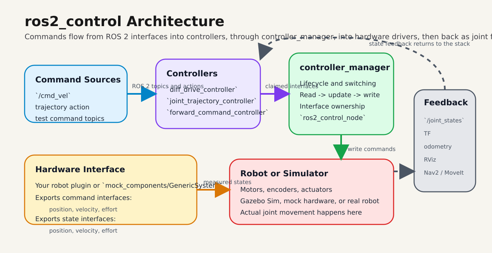
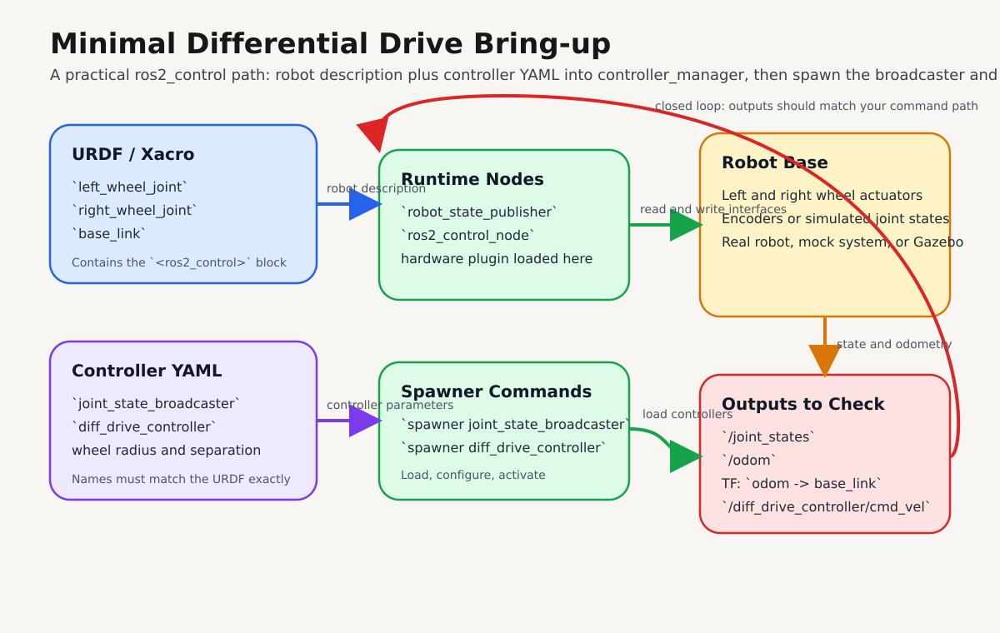
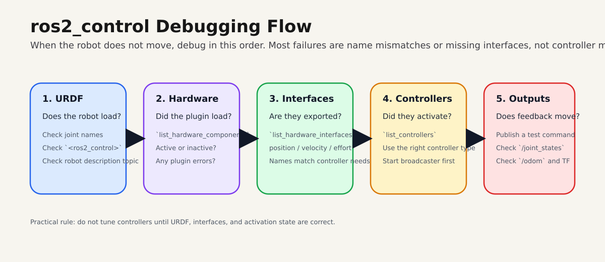

ros2_control for ROS 2 Robots¶
Build a clean control pipeline for your robot using ros2_control, from command topics to hardware interfaces and feedback.
By the end of this page, you should be able to bring up a minimal differential-drive control stack and debug it quickly.
Official references:
- ros2_control documentation
- Controller Manager docs
- diff_drive_controller docs
- joint_trajectory_controller docs
Quick Start¶
Install core packages:
sudo apt update
sudo apt install ros-$ROS_DISTRO-ros2-control ros-$ROS_DISTRO-ros2-controllers
Bring up controllers:
ros2 run controller_manager spawner joint_state_broadcaster
ros2 run controller_manager spawner diff_drive_controller
Send a test command:
ros2 topic pub /diff_drive_controller/cmd_vel geometry_msgs/msg/TwistStamped \
"{header: {frame_id: base_link}, twist: {linear: {x: 0.2}, angular: {z: 0.4}}}" -r 10
Expected result:
/joint_statesupdates continuously/odomupdates- TF shows
odom -> base_link
Tip
If motion does not work, run ros2 control list_hardware_interfaces first. Most failures are interface mismatches.
Prerequisites¶
| Item | Requirement |
|---|---|
| ROS 2 | A sourced ROS 2 environment ($ROS_DISTRO) |
| Robot description | URDF or xacro with valid joint names |
| Control config | Controller YAML with matching joint names |
| Runtime tools | controller_manager CLI available |
Optional for simulation:
sudo apt install ros-$ROS_DISTRO-gz-ros2-control
Architecture¶

High-level flow: ROS 2 commands go into controllers, controller_manager arbitrates interfaces, the hardware layer talks to motors or simulation, and feedback returns as joint states, odometry, and TF.
Typical data flow:
cmd_vel / trajectory / command topic
->
controller
->
controller_manager
->
hardware interface
->
motors / actuators / simulator
->
joint state feedback
->
controllers + robot_state_publisher + RViz
Core Concepts¶
ros2_control connects:
- controllers
- hardware drivers
- robot description
- command topics or actions
- joint feedback
Main runtime blocks:
controller_manager: loads controllers, manages lifecycle, executes read-update-write loop- hardware component: exports command and state interfaces
- controllers and broadcasters: consume interfaces and publish command/state outputs
Common controller packages:
| Package | Use |
|---|---|
joint_state_broadcaster |
publish joint states |
diff_drive_controller |
two-wheel mobile bases |
joint_trajectory_controller |
robot arms and multi-joint motion |
forward_command_controller |
direct command testing |
Minimal Configuration¶
1) URDF ros2_control block¶
All joints used by controllers must exist in URDF and use exactly the same names.
<ros2_control name="DriveBaseSystem" type="system">
<hardware>
<plugin>mock_components/GenericSystem</plugin>
</hardware>
<joint name="left_wheel_joint">
<command_interface name="velocity">
<param name="min">-20.0</param>
<param name="max">20.0</param>
</command_interface>
<state_interface name="position"/>
<state_interface name="velocity"/>
</joint>
<joint name="right_wheel_joint">
<command_interface name="velocity">
<param name="min">-20.0</param>
<param name="max">20.0</param>
</command_interface>
<state_interface name="position"/>
<state_interface name="velocity"/>
</joint>
</ros2_control>
Expected result:
- interfaces appear in
ros2 control list_hardware_interfaces - no missing-joint or interface-type errors on startup
2) Controller YAML¶
controller_manager:
ros__parameters:
update_rate: 100
joint_state_broadcaster:
type: joint_state_broadcaster/JointStateBroadcaster
diff_drive_controller:
type: diff_drive_controller/DiffDriveController
diff_drive_controller:
ros__parameters:
left_wheel_names: ["left_wheel_joint"]
right_wheel_names: ["right_wheel_joint"]
wheel_separation: 0.36
wheel_radius: 0.075
publish_rate: 50.0
base_frame_id: base_link
odom_frame_id: odom
use_stamped_vel: true
Expected result:
- controller types resolve correctly
joint_state_broadcasteranddiff_drive_controllercan activate
Warning
If left_wheel_names and right_wheel_names do not exactly match URDF joint names, the controller will not claim interfaces.
Step-by-Step Bring-up¶
1) Start robot description and control node¶
Start robot_state_publisher with your URDF/xacro, then start ros2_control_node from controller_manager.
Expected result:
- hardware component is loaded
- no plugin initialization errors
2) Spawn controllers¶
ros2 run controller_manager spawner joint_state_broadcaster
ros2 run controller_manager spawner diff_drive_controller
Expected result:
- both controllers show as active in
ros2 control list_controllers
3) Validate interfaces and runtime state¶
ros2 control list_hardware_components
ros2 control list_hardware_interfaces
ros2 control list_controllers
ros2 control list_controller_types
Expected result:
- hardware component present and active
- expected command interfaces available
- expected state interfaces available
4) Publish a drive command and verify feedback¶
ros2 topic pub /diff_drive_controller/cmd_vel geometry_msgs/msg/TwistStamped \
"{header: {frame_id: base_link}, twist: {linear: {x: 0.2}, angular: {z: 0.4}}}" -r 10
Then verify:
/joint_states/odom- TF between
odomandbase_link - wheel motion in RViz or simulator

Troubleshooting¶
| Symptom | Likely cause | Fix |
|---|---|---|
| Controller fails to activate | Joint names mismatch between URDF and YAML | Match names exactly |
| No movement after command | Command interface type does not match controller expectation | Confirm velocity/position interface types |
/joint_states missing |
joint_state_broadcaster not started |
Spawn broadcaster first |
| Robot description loads but control fails | Missing or incomplete <ros2_control> block |
Add required interfaces per joint |
| Odometry is unstable or wrong | Bad wheel radius or wheel separation values | Calibrate and update YAML |
| Hardware appears loaded but inert | Component not active | Check lifecycle state and activation logs |

Note
Debug in this order: URDF, hardware load, interfaces, controller activation, then command/feedback topics.
Real Robot vs Simulation¶
The controller layer can remain mostly the same while the hardware plugin changes.
Typical progression:
- start with
mock_components/GenericSystem - move to
gz_ros2_controlin simulation - replace with your real motor hardware plugin
This lets you validate control behavior before touching physical hardware.
Next Steps¶
- write a custom hardware interface for your robot
- move manipulator projects to
joint_trajectory_controller - practice controller switching and lifecycle flows
- connect this stack to Nav2 or MoveIt after interfaces are stable
If you can activate joint_state_broadcaster, activate one motion controller, and verify interfaces from the CLI, your foundation is correct.